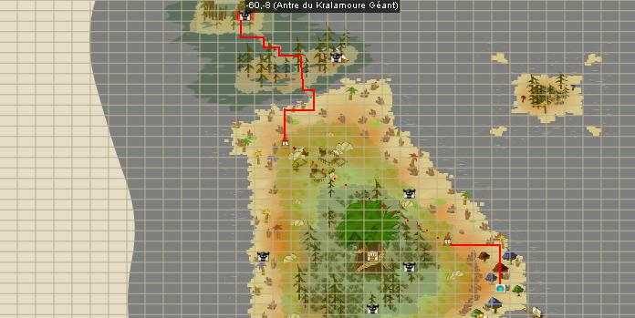

Menu barbok'you

Pour ouvrir l'antre du Kralamour il faut réunir 48 joueurs qui doivent se placer sur les emplacements de leur classe dans 4 salles sur l'ile. Les filles sur les roses et les garcons sur les bleues. Pour atteindre ces salles il faut bien entendu avoir fait la quete pour Allez sur l'ile d'Otomai |
|---|
Une fois les 48 personnes placées correctement sur les dalles des 4 salles, la porte restera ouverte 40 minutes environ |
|---|
  |
|---|
passez par le scaeroplane pour la 4éme salle |
|  |
|---|
et maintenant la porte est ouverte, pour arriver ici il faut avoir fait les quetes : Gardien du Pont de la Mort et tuer le chevalier rose Les portes restent ouvertes environ 40 minutes |
Ca commence en douceur avec un petit bourbassingue pour se chauffer |
|---|
Un Roissingue et 7 potes, il fait un peu mal deja mais ont peu lui piquer sa culotte ! |
|---|
 |
|---|
The Krala !! Au tout debut il va taper les 3ere personne devant, mettez donc ceux avec le plus de PV, il tape à 800/1500 environ. Faire clé réductrice au kralamour avec un énu ca evite de se prendre des coups inutilement, il ne lui reste alors que 7-8 de portée, ensuite il faut invoquer, dans l'ordre inverse depuis la MAJ 1.24, les tentacules en tapant une fois le kralamour dans un élement précis : Tentacule quanternaire : taper le krala avec un sort EAU lance "envie de paralyser" et à 0% res. feu Tentacule tertiaire : taper le krala avec un sort FEU lance "envie de maudire" et à 0% res. air Tentacule secondaire : taper le krala avec un sort TERRE lance "envie de tuer" et à 0% res. eau Tentacule primaire : taper le krala avec un sort AIR lance "envie de tuer" et à 0% res. terre La primaire est la plus chiante car elle gobe et tue les joueurs ^^, virez les pm de ttes c'est le plus simple. Laisser les tentacules en vie, mettez des invocations à côté des 2,3 et 4. Enfin donnez une invoque à la primaire quand elle a suffisamement de PA elle lance son sort, puis la secondaire, etc... et le kralamour va lancer "vulnérabilité de la tourbieres" et aura 900% faiblesse (0% quoi car il a 900% resist de base) partout (sauf neutre) mais +8000% dommages et +63 de portée... et cela pendant 2 tours En gros, il faut jouer à l'arc, qu'un panda lui mette des vulnérabilités dans l'element dans lequel vous allez le taper. recommencer à donner des invocations aux tentacules qu'elles relancent le sort sinon arriver à le OS en 1 tour ou bien mettre un monstre devant lui car il a besoin d'une ligne de vue pour taper et le tuer en 2 tours. Attention, la primaire vous avalent, la quaternaire vous fait passer votre tour à chaque fois. Bon courage ;), il ne drop meme pas le Dofus Ocre. |
Dofus est un MMORPG édité par Ankama." Barbok " est un site non-officiel sans aucun lien avec Ankama.
Toutes les illustrations sont la propriété d'Ankama Studio et de Dofus. Le contenu de ce site a été rédigé initialement par Immortal, il ne s'agit que d'une remise en ligne effectuée par Eternal Games.